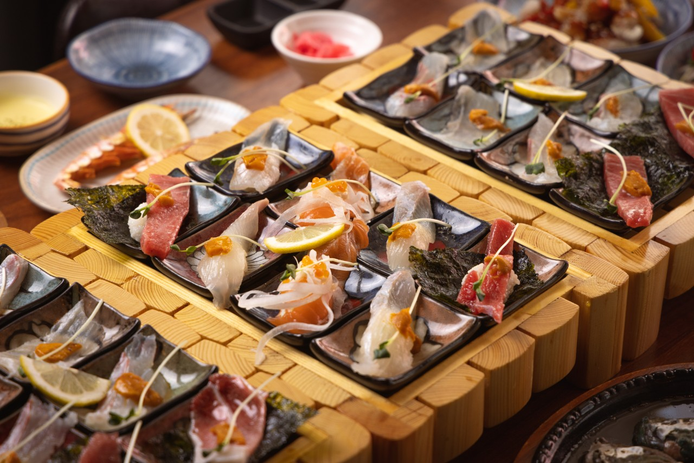
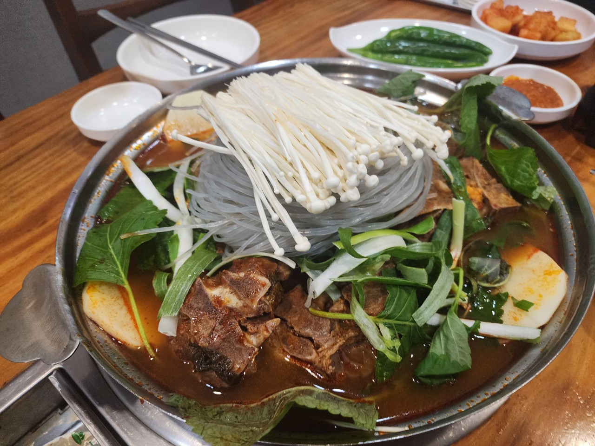

부산광역시의 맛집
사진을 누르면 네이버 페이지로 이동합니다.
강서구 맛집
- 오리한상 명지본점

- 일삼육고기집 명지본점
- 키친어썸 명지본점
사하구 맛집
- 하단 노보루

- 다이버해물나라 하단본점
- 집중호우
부산진구 맛집
- 이재모피자 서면점
- 도우개러지 피자 전포점
- 칸다소바 부전동점
동구 맛집
영도구 맛집
- 맛나감자탕 봉래점

- 그라치에
- 닭먹고오리발
남구 맛집
- 징기스 대연점
- 오륙도수제순대 본점
- 내호냉면 본점

해운대구 맛집
- 솔내음한정식
- 낙불집 송정본점
- 해운마루 해운대본점
기장군 맛집